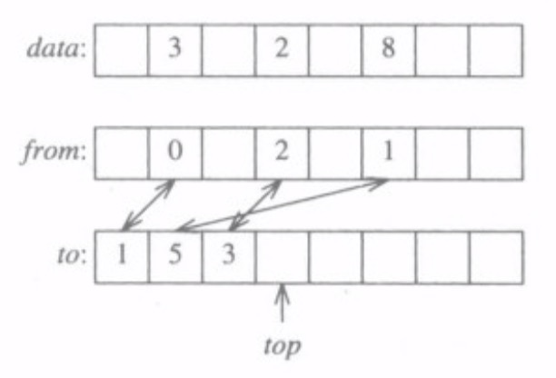

编程珠玑系列笔记 -- 第一章 开篇
本书的中心思想：对实例研究的深入思考不仅有趣，而且可以获得实际的益处。
规律和智慧都隐藏在实例之中，而我们通过实例来窥探它们。实例是道的载体。
开篇
明确问题，一旦问题明确，这场战役就成功了 90%。
确定用户的真实需求是程序设计的根本。
简单的程序通常比具有相同功能的复杂程序更可靠、更安全、更健壮、更高效，而且易于实现和维护。因为简单的程序往往更具有概括性、更抽象、更能洞悉问题的本质。
具体问题具体分析
A：怎样给一个磁盘文件排序？
B：为什么非要自己写排序程序呢？为什么不用系统提供的排序程序呢？
A：我需要在一个大系统中排序。由于不明的技术原因，我不能使用系统中的文件排序程序。
B：需要排序的内容是什么？文件中有多少条记录？每条记录的格式是什么？
A：文件最多包含 1 千万条记录，每条记录都是 7 位的整数。
B：等一下，既然文件这么小，何必非要在非要在磁盘上进行排序呢？为什么不在内存里进行排序呢？
A：尽管机器有许多兆字节的内存，但排序功能只是大系统中的一部分，所以估计到时候只有 1MB 的内存可用。
B：你还能告诉我其他一些与记录相关的信息吗？
A：每条记录都是 7 位的正整数，再无其他相关数据。每个整数最多出现一次。
实际上问了这么多，提问者都没有主动将自己的问题无保留的告诉被求助对象，反而是被求助对象耐心的一点一点询问。问题的真实背景是这样的：
在美国，电话号码由 3 位区号后再跟 7 位数字组成，拨打含免费区号 800（当时只有这一个号码）的电话是不收费的。这位程序员正在开发这类数据库处理系统的一小部分，需要排序的整数就是免费电话号码。输入文件是电话号码列表，号码重复出现算出错。期望的输出文件是以升序排列的电话号码列表。应用背景同时定义了相应的性能需求。当与系统的会话时间较长时，用户大约每小时请求一次有序文件，并且在排序未完成之前什么都做不了。因此，排序最多只允许执行几分钟，10 秒钟是比较理想的运行时间。
准确的问题描述
输入： 一个最多包含 n 个正整数的文件，每个数都小于 n，其中 n=
输出： 按升序排列的输入整数的列表。
约束： 最多有（大约）1MB 的内存可用，有充足的磁盘存储空间。运行时间最多几分钟，运行时间为 10 秒钟就不需要再优化了。
程序设计
传统的排序有归并排序、快速排序，一般人想到的都是使用一个 4 字节的 int 型来表示数据，但 1000 万的数据就需要 40MB 的内存，所以需要至少 40 趟排序，需要读取输入文件至少 40 次，这将会是非常大的开销。
很显然，我们真正要做的应该是压缩数据表示，如果能让所有数据一次读入内存（仅 1MB）就好了。考虑到这一题的特殊性，我们使用长度为 1000 万位的位图来表示所有数据，每个整数都只占 1bit，可以说是极限的数据表示法了。这样一来我们只需要 125 万个字节，也就是 1.25MB 内存。满足了一次读入内存的要求。
这种数据表示，利用了该问题的三个在排序问题中不常见的属性：
- 输入数据限制在相对较小的范围内
- 数据没有重复
- 对每条记录而言，除了单一整数外，没有任何其他关联数据
排序伪代码：
1 | /* phase 1: initialize set to empty */ |
时间-空间折中与双赢： 随着现在存储器的空间越来越大，我们往往倾向于用空间换时间的算法，这种折中非常常见。但减少程序的运行空间需求也会减少其运行时间。空间需求的减少之所以会导致运行时间的减少，有两个原因：需要处理的数据变少了，意味着处理这些数据所需的时间也变少了。同时可以将这些数据保存在内存中而不是磁盘上，进一步避免了磁盘访问的时间（IO 是巨大的开销，网络传递数据是更大的开销）。当然了，只有在设计远非最优的时候，才有可能时空双赢。
折中在所有工程领域都存在。例如，汽车设计者可能会通过增加沉重的部件，用行驶里程的减少来换取更快的加速。但双赢是更好的结果。我对自己驾驶过的一辆小轿车做过一番研究，我观察到：“轿车基本结构重量的减少会使各底盘部件的重量进一步减少--甚至消除了对某些底盘部件的需求，例如转向助力系统。”
真实代码
1 |
|
对移位操作熟悉的话就会知道，i>>SHIFT的意思就是i/32。a[i>>SHIFT]也就是定位到 i 所属的数组单元（每个数组单元 4 个字节）。而i&MASK的意思是i%32，然后(1<<(i&MASK))就定位了 i 在所属的数组单元中的具体位置。
但我们手上没有数据来测试我们的代码是否正确，测试数据可以用随机生成的办法产生，具体会在《编程珠玑第 12 章 取样问题》中讲解。
接下来我们来看看习题：
习题
- 如果不缺内存，如何使用一个具有库的语言来实现一种排序算法以表示和排序集合？
使用 C 语言的标准库函数qsort:
1 | int intcompare(int *x, int *y){ |
使用 C++的标准模板库中的容器set来完成相同任务：
1 | int main(){ |
- 如何使用位逻辑运算（例如与、或、移位）来实现位向量？
代码上面已经给出：真实代码
-
运行时效率是设计目标的一个重要组成部分，所得到的程序需要足够高效。在你自己的系统上实现位图排序并度量其运行时间。该时间与系统排序的运行时间以及习题 1 中排序的运行时间相比如何？假设 n 为 10000000，且输入文件包含 10000000 个整数。
-
如果认真考虑了习题 3，你将会生成小于 n 且没有重复的 k 个整数的问题。最简单的方法就是使用前 k 个正整数。这个极端的数据集合将不会明显地改变位图方法的运行时间，但是可能会歪曲系统排序的运行时间。如何生成位于 0 至 n-1 之间的 k 个不同的随机顺序的随机整数？尽量使你的程序简短且高效。
-
那个程序员说他有 1MB 的内存空间可用，但是我们概要描述的代码需要 1.25MB 内存。他可以不费力的索取到额外的空间。如果 1MB 空间是严格的边界，你会推荐如何处理呢？你的算法的运行时间又是多少？
使用位图表示 1 000 万个数需要 1000 万个位，或者说 125 万字节。考虑到没有以数字 0 或 1 打头
的电话号码，我们可以将内存需求降低为 100 万字节。另一种做法是采用两趟算法，首先使用
5 000 000/8=625 000 个字的存储空间来排序 0~4 999 999 之间的整数，然后在第二趟排序 5 000 000~9 999 999 的整数。k 趟算法可以在 kn 的时间开销和 n/k 的空间开销内完成对最多 n 个小于 n 的无重复正整数的排序。
- 如果那个程序员说的不是每个整数最多出现一次，而是每个整数最多出现 10 次，你又如何建议他呢？你的解决方案如何随着可用存储空间总量的变化而变化？
如果每个整数最多出现 10 次，那么我们就可以使用 4 位的半字节来统计它出现的次数。利用习题 5 的答案，我们可以使用 10 000 000/2 个字节在 1 趟内完成对整个文件的排序，或使用 10 000 000/2k 个字节在 k 趟内完成对整个文件的排序。
- 使用更多的空间来换取更少的运行时间存在一个问题：初始化空间本身需要消耗大量的时间。说明如何设计一种技术，在第一次访问向量的项时将其初始化为 0。你的方案应该使用常量时间进行初始化和向量访问，使用的额外空间应正比于向量的大小。因为该方法通过进一步增加空间来减少减少初始化的时间，所以仅在空间很廉价、时间很宝贵且向量很稀疏的情况下才考虑使用。
借助于两个额外的 n 元向量 from、to 和一个整数 top，from 和 to 也都没有初始化过，top 初始化为 0。当我们访问索引为 i 的 data 元素，想要知道data[i]有没有初始化过。如果from[i]<top且to[from[i]]=i，那么说明已经初始化过。to 数组就是用来记录已经访问过哪些 data 元素的，实际上 to 数组可以是一个动态数组。

下面代码实现对 data[i]的首次访问：
1 | from[i] = top; |
- 在成本低廉的隔日送达时代之前，商店允许顾客通过电话订购商品，并在几天后上门自取。商店的数据库使用客户的电话号码作为其检索的主关键字（客户知道他们自己的电话号码，而且这些关键字几乎都是唯一的）。你如何组织商店的数据库，以允许高效的插入和检索操作？
商店将纸质订单表格放在 10x10 的箱数组中，使用客户电话号码的最后两位作为散列索引。当客户打电话下订单时，将订单放到适当的箱中。当客户来取商品时，销售人员顺序搜索对应箱中的订单--这就是经典的“用顺序搜索来解决冲突的开放散列”。电话号码的最后两位数字非常接近于随机，因此是非常理想的散列函数，而最前面的两位数字则很不理想 - - 为什么?一些市政机关使用类似的方案在记事本中记录信息。
- 在 20 世纪 80 年代早期，洛克希德公司加利福尼亚州桑尼维尔市工厂的工程师每天都要将许多由计算机辅助设计（CAD）系统生成的图纸从工厂送到位于圣克鲁斯市的测试站。虽然仅有 40 公里远，但使用汽车快递服务每天都需要一个多小时的时间（由于交通阻塞和山路崎岖），花费 100 美元。请给出新的数据传输方案并估计每一种方案的费用。
两地的计算机原先是通过微波连接的，但是当时测试站打印图纸所需的打印机却非常昂贵。因此，该团队在主厂绘制图纸，然后拍摄下来并通过信鸽把 35 毫米的底片送到测试站，在测试站进行放大并打印成图片。鸽子来回一.次需要 45 分钟，是汽车所需时间的一半，并且每天只需要花费几美元。在项目开发的 16 个月中，信鸽传送了几百卷底片，仅丢失了两卷(当地有鹰，因此没有让信鸽传送机密数据)。由于现在打印机比较便宜，因此可以使用微波链路解决该问题。
- 载人航天的先驱们很快就意识到需要在外太空的极端环境下实现顺利书写。民间盛传美国国
家宇航局(NASA)花费 100 万美元研发出了一种特殊的钢笔来解决这个问题。那么，前苏联又会如何解决相同的问题呢?
看过三傻大闹宝莱坞的都知道，前苏联用的是铅笔，但铅笔的碎屑由于失重漂浮在空中会是很麻烦的问题。